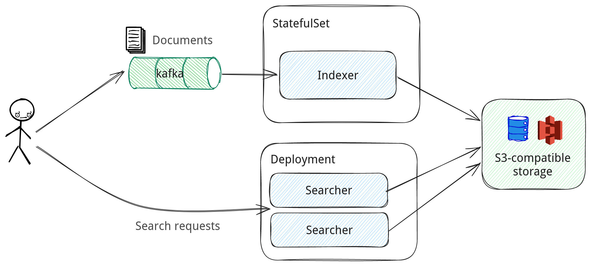

Pull-based document ingestion with Apache Kafka¶
When run in a distributed mode, Nixiesearch can pull documents for indexing from an Apache Kafka topic:
- Kafka can be used as a journal for CDC-style events: every time a document changes in your master database, an event is emitted with an updated document.
- To preserve infinitely-growing topics, you can use Compacted Topics to prune stale document records.

As for Nixiesearch v0.1, only Apache Kafka and S3/local files are supported for pull-based indexing. We have Apache Pulsar (see issue nixiesearch#190) and AWS Kinesis (see issue nixiesearch#207) on the roadmap.
Configuration¶
All Kafka-specific connector options should be passed as command-line flags to the nixiesearch index kafka subcommand:
-b, --brokers <arg> Kafka brokers endpoints, comma-separated list
-c, --config <arg> Path to a config file
-g, --group_id <arg> groupId identifier of consumer. default=nixiesearch
-i, --index <arg> to which index to write to
-l, --loglevel <arg> Logging level: debug/info/warn/error, default=info
-o, --offset <arg> which topic offset to use for initial connection?
earliest/latest/ts=<unixtime>/last=<offset>
default=none (use committed offsets)
--options <arg> comma-separated list of kafka client custom options
-t, --topic <arg> Kafka topic name
-h, --help Show help message
brokers, index and topic options are required.
The following options are optional:
* group_id: a name of consumer group.
* offset: a time window in which events are read:
* earliest - start from the first stored message in the topic
* latest - consume only events that came recently (after Metarank connection)
* ts=<timestamp> - start from a specific absolute timestamp in the past
* last=<duration> - consume only events that happened within a defined relative duration (duration supports the
following patterns: 1s, 1m, 1h, 1d)
* options: a comma-separated list of custom connector options:
* example: --options key1=value1,key2=value2